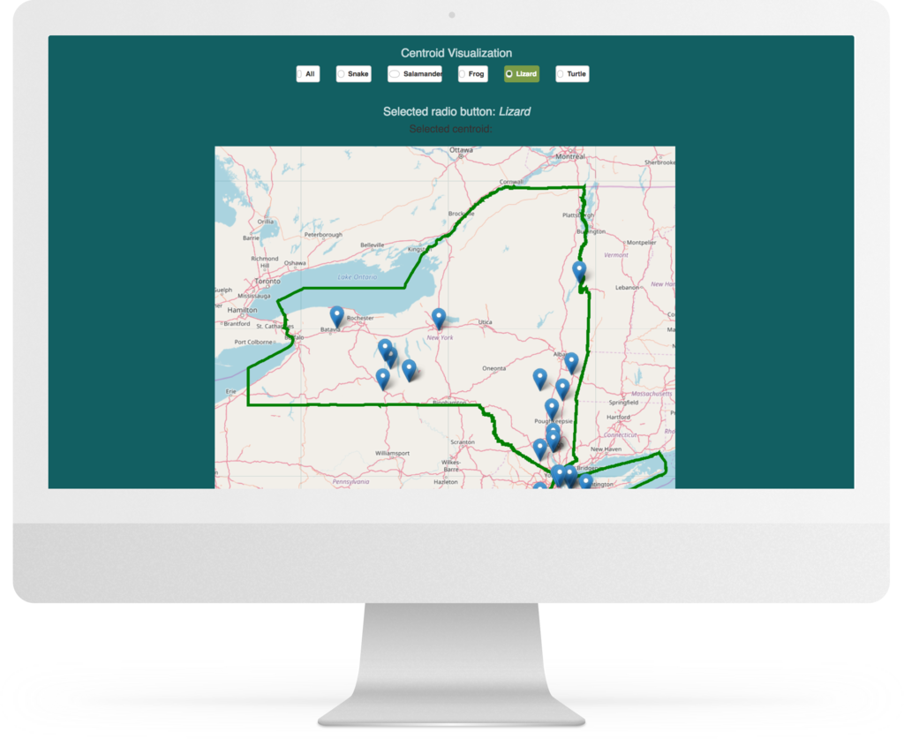

Upstream

The Client
Upstream tech is a public benefit corporation that leverages machine learning technology to quantify historical and ongoing water usages as well as information regarding the location of certain species.
The Project
In order to better understand the historical data that's available, Jumbocode is building a visualization platform for Upstream as well as specific visualizations.